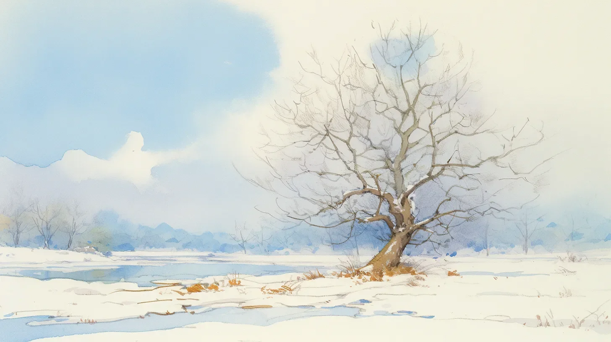

얼음이 모든 것을 가져갔지만 가장 중요한 것은 남겼다 - 그 완고한 나무 줄기의 곡선과, 빛을 향해 뻗어나가는 모습을.
[The ice had taken everything except what mattered most - that stubborn curve of trunk, that reaching toward light.]
늙은 나무는 겨울 하늘을 배경으로 물음표처럼 구부러져 있었고, 그 나무껍질은 잊혀진 동전들처럼 변색되어 있었으며, 서둘러 붙인 붕대처럼 눈 조각들을 걸치고 있었다.
[The old tree bent like a question mark against the winter sky, its bark the color of forgotten pennies, wearing patches of snow like hastily applied bandages.]
풍경은 설백색과 진주빛으로 펼쳐져 있었고, 마치 수채화 화가의 겨울 꿈처럼 보였다.
[The landscape stretched around it in shades of alabaster and pearl, a watercolor artist’s dream of winter.]
추위가 계곡을 뒤덮기 전, 어린 여우 한 마리가 나무의 드러난 뿌리 사이에 굴을 만들었다.
[Before the freeze claimed the valley, a young fox had made its den among the tree’s exposed roots.]
여우의 붉은 갈색 털은 나무의 풍화된 구리빛 껍질과 어울렸고, 이는 자연이 만든 눈속임이었다.
[The animal’s russet coat had matched the weathered copper of the tree’s bark, nature’s own sleight of hand.]
이제 그 뿌리들은 어린아이의 팔처럼 굵고 두 배는 더 강했으며, 눈 아래에서 따뜻한 공간을 품고 있었다. 이는 여우와 나무만이 아는 비밀이었다.
[Now those same roots, thick as a child’s arm and twice as strong, cradled a pocket of warmth beneath the snow, a secret kept between fox and tree.]
기억은 나무에서 육체와는 다르게 존재했다 - 고요한 물에 퍼지는 파문처럼 바깥으로 나선을 그리며, 원형으로, 인내하며, 나이테로 새겨졌다.
[Memory lived in wood differently than in flesh - circular, patient, written in rings that spiraled outward like ripples in still water.]
나무껍질의 모든 균열과 옹이는 살아남은 폭풍우의 이야기, 스쳐 지나간 번개의 흔적, 시간이 단련시킨 것을 쓰러뜨리려 했지만 실패한 바람들의 이야기를 들려주었다.
[Each crack and knot in the bark told stories of storms survived, of lightning nearly struck, of winds that tried and failed to topple what time had tempered.]
나무는 얼음 아래 숨겨진 숨결처럼 자신의 역사를 침묵 속에 간직했다.
[The tree held its histories in silence, like breath held beneath ice.]
한 마리의 새가 가장 높은 가지에 내려앉았지만, 그 무게는 너무 가벼워서 떨림조차 일으키지 않았다.
[A single bird landed on the highest branch, its weight too slight to cause a tremor.]
앙상해 보이는 것과는 달리, 그 가지는 단단히 버텼다 - 마치 가을에 여우의 무게를 지탱했던 것처럼, 봄의 첫 새싹을 지탱하게 될 것처럼.
[The branch, contrary to its skeletal appearance, held firm - just as it had held the fox’s weight in autumn, just as it would hold spring’s first buds.]
힘은 보는 것과 아는 것 사이의 공간에, 부서지기를 거부하는 것들의 조용한 끈기 속에 존재했다.
[Strength lived in the spaces between seeing and knowing, in the quiet persistence of things that refused to break.]